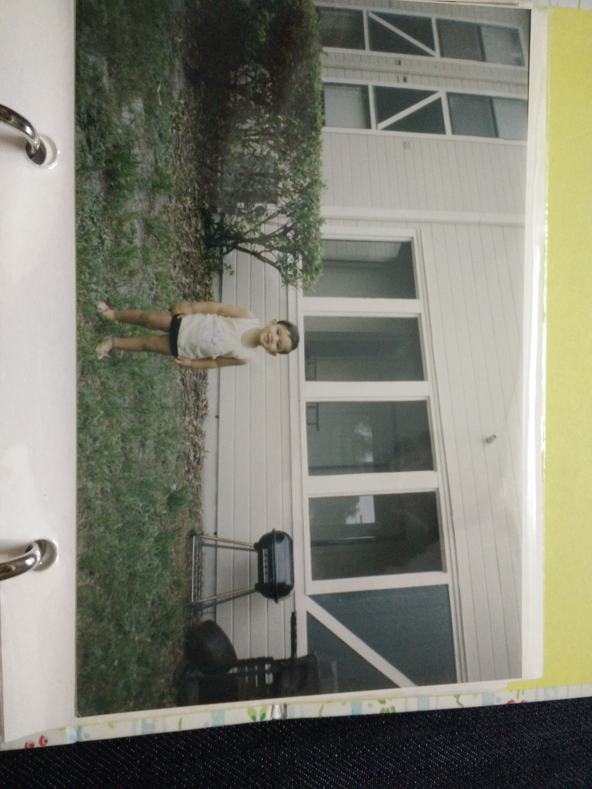

Physical Development
The growth and strengthening of limbs rapidly occurs, allowing for crawling and walking.
Motor Development
As a baby, I was born with very little motor capability. As I grew, my sensory abilities and physical characterisitcs changes due to maturation. Many of my organs and muscles developed during this time, such as my brain, where neural networks were created, spanning across millions of cells and synapses. As my neural network developed, my brain obtained plasticity, allowing my entire brain to become interconnected, allowing for more delicate motor movements, such as crawling and walking.
Sensory Capabilities
As an infant, my sensory capabilities were limited and simple. My vision was blurry and not well trained, my taste was limited to distinguishing between sweet or other tastes, and I was sensitive to sound and minor changes in temperature. As I was born in India, I was fed very mushy foods, rather than baby formula or baby food. Due to this, my teeth came in very rapidly and my taste developed to become more sensitive than average. My residence in India also meant that I was aclimated to warmer, more tropical weather.
Reflexes
As I still had many things to learn, some natural reflexes I had were to suckle on things placed in my mouth, grasp objects in my hand, and roll onto my stomach.
- Whenever an object such as a pacifier would be put in my mouth, I would suck on it for comfort.
- Another tendency of mine would be to close my fingers around anything placed in my palm, such as a finger or food.
- I also frequently would roll over onto my stomach rather than laying on my back.
Major Motor Movements
As I grew older, I began developing muscle and gaining better control of my limbs. These gross motor skills led to me to take my first steps at eleven months old, and walking well when I was 15 months.